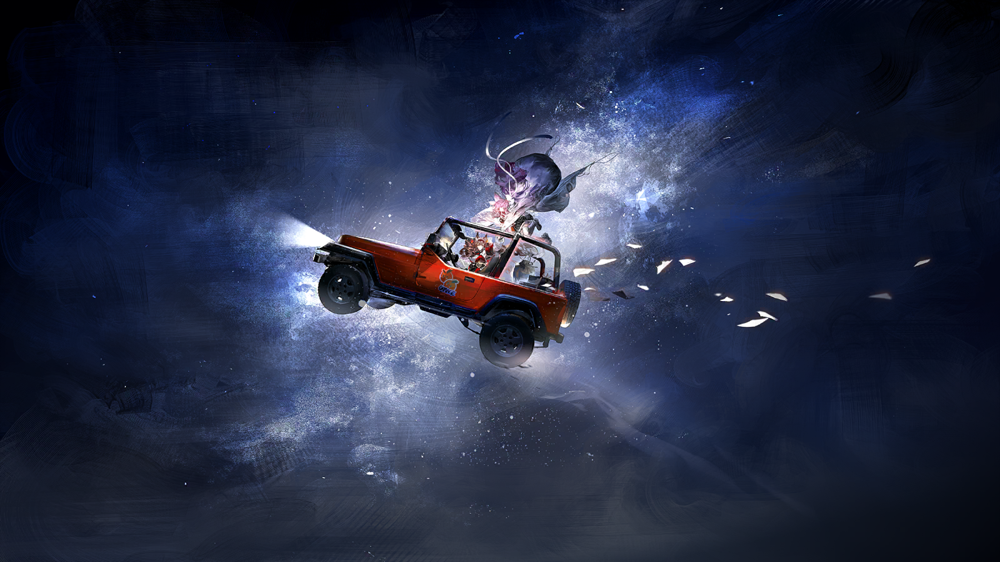

干练的女性
霍普、席普、强普！别在厨房乱晃给我添乱了，快去把你们妹妹的生日礼物藏藏好！
干练的女性
法尔、法特、法德斯特——麻烦问你们再借五套餐具，我刚刚才想起来我的表哥一家也要过来。

干练的女性
亨特，今天是你女儿十八岁生日，你居然还在看击球比赛——欸，不对啊，我们镇的远程通讯不是两个月前就坏了吗？

塔妮父亲
麦迪森，亲爱的，别着急。再有二十分钟比赛就结束了。
塔妮父亲
远程通讯确实坏了，但今天可是我们主场球队——大涌泉铁脚队的比赛，要不是因为塔妮过生日，我就直接去镇郊现场观赛了。

塔妮母亲
你还好意思说......
塔妮父亲
而且塔妮也支持铁脚队，要是今天他们进了决赛，我就把这个好消息当作礼物送给塔妮，如果他们输了......
塔妮母亲
输了你就先想怎么让塔妮别跺脚吧。忘了她“珊比”这个名字是怎么来的了？
塔妮父亲
嗐，我妈给起的小名嘛。毕竟这孩子太喜欢跺脚了，“珊比”这名字就是咚咚咚跺脚——

塔妮母亲
你别跟着跺呀！
塔妮父亲
哈哈——
塔妮母亲
是塔妮回来了！快藏好！

塔妮父亲
呃......是不是应该有人给塔妮开门？
塔妮母亲
算了，不躲了，一开门我们就拉礼花！三、二、一——！

塔妮
我回来了——
塔妮的家人们
生日快乐！
塔妮
哎呀，我都这么大了，不需要再搞这种生日惊喜啦！

塔妮
老爸今天早上还偷偷摸摸把我的钥匙藏起来，我可都看到了！
塔妮父亲
嘿嘿，我女儿真聪明！
塔妮母亲
欸？这是你的新朋友？真是可爱的姑娘，来参加我们珊比——不不不，塔妮的生日会的吧？

塔妮父亲
瞧你，孩子都这么大了还叫小名，会把客人搞糊涂的。
塔妮母亲
嗐，这不就知道了嘛！小姑娘，你叫什么名字？

安洁莉娜
叔叔阿姨你们——呃，哥哥......姐姐？你们好，我是安洁莉娜......
塔妮
别看爸爸妈妈长得这么年轻，其实也已经快要到四十岁啦。
塔妮
据说奶奶四十岁的时候长得也很年轻，可能这就是我家的遗传之类的，我看起来也不像是十八岁......
塔妮母亲
哎呀，人总是要经过历练才会成长的，别担心。
塔妮母亲
安洁莉娜，我一会儿就帮你把客房收拾出来，今天就住下。
安洁莉娜
谢谢您！不过我在大涌泉镇有地方住——

塔妮
没关系的，我们家住得下的啦。

安洁莉娜
那我就不客气啦。谢谢叔叔阿姨！
塔妮父亲
不谢不谢！小姑娘，你支持哪支击球队啊？不对，看你的样子你是外乡来的？你们那儿一般玩什么球类运动？
塔妮
好啦，别围着安洁莉娜了。我的生日礼物呢？今天可是个大日子！今天一过，明天我就可以启程啦！

安洁莉娜
怪不得这场生日晚会这么隆重......真好啊，塔妮。有这么多人祝福你的出发，我真替你高兴。
塔妮
是啊，这个十八岁生日，我真——的真的等了好长时间！
塔妮
之前我还没跟你讲过吧，其实我十四岁的时候就开始问爸爸妈妈，我能不能离开大涌泉镇去探险了。

安洁莉娜
十四岁......不管怎么说还是有点太早了吧？

塔妮
爸爸妈妈也这么说。雷姆必拓的荒地太危险了，至少也得等到十六岁。
塔妮
但......十六岁生日前夕，我感染了矿石病。幸运的是感染程度非常轻，急性发作期都很短。

塔妮
在病情稳定之后，我又问了一次能不能出去。爸爸妈妈说，离开大涌泉镇，就很难找到感染者能生活得这么自在的地方了。
塔妮
但我还是想出去，想像奶奶一样成为一个伟大的探路者。爸爸妈妈答应了，说等到我十八岁的时候，一定让我启程......

塔妮
所以我今天才会有这么一场盛大的生日晚会！爸爸妈妈，还有所有愿意来为我送行的亲戚们，谢谢你们！
房间里的空气似乎凝滞了几秒钟，但很快又像塔妮一回家时那样欢快起来。
塔妮
让我先来拆礼物吧......谢谢法尔舅舅、法特姨妈，还有法德斯特姑妈送的礼物！
塔妮
好大的箱子啊，里面是什么？便携式防牙兽帐篷，还是二十四小时野外报警系统？

法尔
呃，我们送的是按摩摇摇椅！之前想的是你老长时间坐在室内，它能让你工作的时候舒服不少......

塔妮
呃......虽然之后我就不会在室内一直待着了，但还是谢谢你们！
塔妮
霍普堂姐、席普表姐、强普表哥，你们送的是什么？
霍普
是“泰拉巡礼”三十种润喉糖礼盒，因为你一直得说话嘛，所以就想送你点实用的东西。
塔妮
......还是谢谢你们，到了野外之后说不定也要扯着嗓子吆喝呢！

塔妮父母
小珊比，我们......

塔妮
爸爸妈妈，你们其实不用给我准备礼物的，在家里为我忙前忙后准备生日会已经很辛苦了。
塔妮
马上要启程了，想到之后会有很长一段时间见不到你们，我其实还是有点......

塔妮
欸？怎么耳机上还连了个接线用的交换器......
塔妮父亲
这个，毕竟再过一段时间你就升职了，总得换个更称手的装备嘛！
塔妮
但我想要的可不是在接线室用的那种啊......？
塔妮母亲
唉，不说这个了。生日礼物的事我们之后再聊，还是先吃东西——

塔妮
不对吧？为什么你们看上去像完全不知道我要离开大涌泉镇一样？这可是两年前你们就答应我的事啊，难道只有我......
塔妮
只有我一个人记得吗......？
塔妮父亲
唉，小珊比，我们没有忘记这件事，只是......只是你现在做镇里的接线员做得好好的，没必要跑出门受苦啊。
塔妮母亲
是呀，做探路者可不是开玩笑，你得有充足的野外经验，还要懂得人情世故，我们才能放心让你上路。
塔妮母亲
还有那些你整天念叨的探险故事，奶奶她老人家大概也没想到你会照单全收......

塔妮
等等，你是说奶奶骗我？
塔妮母亲
那些毕竟是故事，不可能和事实一模一样，要是你听信了里面那些逗人玩儿的部分就出门了——

塔妮
妈妈，你......你其实是这么想的？
塔妮
爸爸......你呢？
塔妮父亲
消消气，消消气好吗？今天是你的生日，我们的小珊比本来就是可以许愿的，对不对？

塔妮
爸爸，你肯答应我了？
塔妮父亲
我......我答应了！只要再等两年，等你到了二十岁，我跟妈妈就让你一个人去探险，好吗？
塔妮
......
塔妮
你们......原来是这么想的......
塔妮
你们不相信奶奶以前的辉煌事迹，也不相信我能成为独立的探路者。
塔妮
你们认为我想要离开大涌泉镇是一拍脑袋的决定，认为奶奶给我讲的故事只是为了逗我开心......
没人点头，也没人摇头。

塔妮
既然你们无法理解我的心情，那我也不需要得到你们的认可不是吗？
塔妮
我不会再等了。
塔妮母亲
塔妮！

安洁莉娜
阿姨，您不要着急，我帮你们一起去把塔妮找回来！
塔妮父亲
等等，小姑娘。
安洁莉娜
叔叔？再不去塔妮就要跑远了啊。
塔妮父亲
唉，安洁莉娜，让她去吧。明天早上塔妮就会回来的。

安洁莉娜
什么？

塔妮父亲
塔妮这孩子是大涌泉镇体格最小的卡特斯，我和她妈妈曾经还为她长大后可能干不了体力活发愁过。
塔妮父亲
可能是因为自己做不到，所以她格外喜欢我母亲伊娜拉讲的那些故事，想成为跟她奶奶一样的探路者。
塔妮父亲
但我们了解塔妮，她跟我母亲可不一样。
塔妮父亲
母亲性格爽快，行动干练，不是感染者，却在源石技艺上很有天赋。她人生的大部分时间都在荒原上独来独往，因为她有底气。
塔妮母亲
而我们家塔妮没有力气，也没有源石技艺天赋。
塔妮母亲
她从小到大一直嚷嚷着要出去闯闯，离家出走的次数不下三十次——但她总是走到镇门口就被吓回来了。
塔妮母亲
上一次是遇到了觅食的牙兽群，再上一次是把邻居晒在荒地上的萝卜串当成了鬼影......她天生更适合待在镇里做个接线员呀！

安洁莉娜
可塔妮看上去很伤心......
塔妮母亲
......
塔妮母亲
唉，这孩子要是看到我们全家人去找她，只会因为抹不开面子躲得更久，但我确实担心她的身体状况......

安洁莉娜
塔妮妈妈，我是从罗德岛来的。罗德岛是一家医疗公司，我也懂一些矿石病的医疗知识。
安洁莉娜
如果全家出动会适得其反的话......？
塔妮母亲
那就拜托你了。
塔妮母亲
我知道塔妮选朋友的眼光一直很不错。如果有你在，我们最起码不会那么担心......
安洁莉娜
就算您和叔叔不拜托我，我也会去的，请放心吧。
安洁莉娜
......还有，虽然也许我不该说这种话，但两年、两年，之后再等两年......未免太奇怪了。我其实很能理解塔妮。
塔妮父亲
唉......

塔妮
呼、呼......
塔妮
我、我再也不要在这里待下去了！不就是一个人出去吗，我......我做得到！
随车狂飙而去的哭喊
呜哇！完蛋了完蛋了完蛋了！
随车狂飙而去的哭喊
我明明只是想修好它，怎么电路板会出问题！
随车狂飙而去的哭喊
呜呜呜......说不定故障已经影响到镇子内部的通讯了。不能再待下去了，还是先去下一个通讯塔站点吧......
塔妮
（吸溜鼻子）

塔妮
果然这个镇子，就是叫人待不下去......
一路拖着硕大的背包，塔妮终于是跑不动了。她随便找了个地方一屁股坐了下来，看着眼前一片苍茫的荒野，忍不住抽噎起来。
夜空之中，一颗淡粉色的星星闪烁了一下。
小塔妮
奶奶，我、我不敢——

伊娜拉
没关系，你看，两只手牢牢抓住上面的树干，脚再使劲一蹬——你就能上来了！
小塔妮
太、太高了......
伊娜拉
那你是为什么不和其他人一起玩，要拉着奶奶跑到这里？
小塔妮
......因为......因为他们说我个头小，耳朵也小，像个小玩偶......爬树和游泳都太危险了，小玩偶不能做......可我也想这么玩！
小塔妮
我不想就当一个小玩偶！我想当探路者，像奶奶这样的探路者，我要做一个能翻山越岭的厉害的人！
伊娜拉
那，奶奶的小珊比觉得，厉害的人会怎么做呢？
小塔妮
嗯，会坚持下去爬上来——我也能爬上来......嘿！
小塔妮
——啊，我、我摔下去了！呜，好痛！
一整天，小塔妮都在不断地攀上那棵高高的瓶树。她摔下来，哭上一鼻子，又在奶奶的鼓励下继续往上爬。
当星星布满整片夜空时，她终于坐在了最高的树冠上，和奶奶坐在一起，抬头看向美丽的星空。
那里有一颗淡粉色的星星，一闪一闪。
小塔妮
淡粉色的星星，好像我哦......那这颗是我的星星！
小塔妮
奶奶，你的星星是哪一颗？
伊娜拉
奶奶的星星？
伊娜拉
让我看看......奶奶的星星在前面。
伊娜拉指了指更高更远的一颗星星。
小塔妮
为什么隔得那么远？
伊娜拉
不远的，小珊比的星星现在是跟在奶奶的星星后面，但很快，很快就能追上啦。
伊娜拉
小珊比也会成为和奶奶一样的人，去很多很远的地方，不会有人再说你只是一个小玩偶......
伊娜拉
你是奶奶最厉害的孙女，一定也能飞得这么高，这么远。
小塔妮
嗯......
塔妮
像奶奶一样飞得又高又远......
塔妮
当初奶奶为了给聚落的人找一个安乐的家，放弃去无人涉足的南境探险。一切尘埃落定之后，奶奶想重新踏上旅程，又被家人阻拦......

塔妮
我的选择是对的......如果听家里人的话，不管是奶奶还是我，都不会踏上去南境的旅程了。
塔妮
哪怕他们发现这次我不再像以前那样逃回家之后，会着急、会生气，我也......我也不会在乎的！
塔妮
我要去南境，我要踏出自己的第一步！

塔妮
哈哈哈很好，我已经踏出大涌泉镇了，我已经——
塔妮
欸？什么人！

冷酷的施令者
包围大涌泉镇镇门。
凶狠的手下们
是！

塔妮
包围？等等，我要出镇啊，为什么拦我？
冷酷的施令者
不准走。
塔妮
发、发生什么了，我什么都没做啊，我——

奇怪的年轻人B
......啊！
不再奇怪的年轻人们
塔妮，给我等着！总有一天你会后悔的！

塔妮
难道那两个吸辣瓶树粉的不良青年真的加入了什么危险的团伙......
塔妮
怎、怎么办，我真的只是想去南境而已啊！！！
塔妮
唔......好刺眼......
凶狠的手下们
*雷姆必拓粗口*哪儿来的光，眼睛都要瞎了！
？？？
塔妮！快上车！
塔妮
安洁！

安洁莉娜
我找了你半天，听到镇门口有动静就过来了，这些围着你的人是谁？
塔妮
他们是头盔姐安珀和路障哥皮塔身后的神秘组织！站在最前面的那个估计就是他们老大！
冷酷的施令者
？
安洁莉娜
我在镇子里也看到了不少这样穿着打扮的人，不能回去了，我们先离开这里！

塔妮
好、好！
凶狠的手下们
队长，什么情况？
冷酷的施令者
鬼鬼祟祟，先追！
凶狠的手下们
是！
安洁莉娜
他们还在后面？
塔妮
追得很紧，这样下去我们很难跑掉！不过零号公路路况非常差，夜路更是难开，说不定我们可以借此甩掉他们，前提是——
安洁莉娜
前提是我们也要熟悉路况啊！前面有个大坑，来不及避开了！
塔妮
救命啊啊啊啊——！
安洁莉娜
塔妮？
塔妮
啊啊啊啊啊——啊？
安洁莉娜
下次上车之后一定要记得先系安全带哦——
塔妮
欸？
安洁莉娜
——现在，抓紧我的手！

在塔妮反应过来之前，安洁莉娜紧紧抓住了她的手。她不明白为什么自己突然飘出了车外，也不明白为什么大地看上去突然好远好远。
车轮带起的烟尘被甩在后面，后备箱里被热情镇民们塞进去的温泉宣传页，似乎也在为自己能离开大涌泉镇而高兴。
它们散落在夜空中，飞舞在塔妮身边，直到这时塔妮才意识到——重力消失了。
塔妮觉得自己从来没有这么轻盈过，像是一只羽兽，或者是一朵随风飘荡的柔软花朵。
雷姆必拓的荒漠在她眼前展开，虽然背对着夜空，但她觉得自己仿佛已经置身于星星之间，作为引力牢牢牵住自己的，是安洁莉娜的手。
她甩开了紧追不放的危险组织，甩开了困了她十八年的大涌泉镇，甩开了对家人的愤怒和委屈，甩开了心底藏着的小小的害怕和不自信。
她像一颗粉色的星星，从夜空呼啸而过。